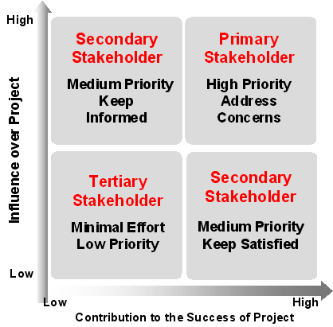

OUM |
Task Overview |
||
Method Navigation |
Current Page Navigation |
||
|
|
||||||||
The purpose of this task is to conduct a stakeholder analysis to verify that all project stakeholders have been identified. Stakeholders are those entities (a person, group or department) whose interests and expectations need to be taken into account when making key project decisions. Alternatively, a stakeholder is someone who has a vested interest in your project or will be affected by its outcomes.
The Project Stakeholder Analysis is an important prerequisite to the Project Team Communication Plan (CMM.020). In this task, the goal is to identify the project stakeholders, determine their influence, concerns and interest in the project, determine what information they would like to receive and by what method of delivery. The Project Stakeholder Analysis should be incorporated into the project's overall Project Team Communication Plan component of the Project Management Plan (PMP).
PS.ACT.VSSOS Validate Scope, Stakeholders and OCM Strategy
Project Stakeholder Analysis
This work product documents the project stakeholders, their influence and interest in the project, what information they would like to receive and by what method of delivery.
You should follow these steps:
No. |
Task Step | Component | Component Description |
|---|---|---|---|
1 |
Review previously gathered information. | None | Review the Identified Project Stakeholders from Bid Transition and any other pertinent information. |
2 |
Identify key stakeholders. | Stakeholder or Stakeholder Group | Begin with “ C ” level executives but extend the assessment to cover all groups significantly affected by the project and/or who can influence its outcome. Remember that stakeholders can be external to the entity you are working with and that these needs need to be passed on to the Organizational Change Management process. |
3 |
Assess project impact on each stakeholder. | Organizational Change Management Impact | Think about the project impact on stakeholders in broad business terms. Typically, larger projects drive significant changes in business processes, roles and responsibilities, organizational structures and technology usage. |
4 |
Assess stakeholder interest / influence and concerns. | Importance/Influence /Concerns |
During Project Start Up, solicit input from the customer project manager and functional/business unit heads regarding their views on project impact and the roles their groups should play. Recognize that a stakeholder group's perception of the project's impact and the significance of their role in the project can be surprisingly different from the project team's. See Tools for one way to address this. |
5 |
Prioritize stakeholders. | Prioritized Stakeholders | The Prioritized Stakeholders show which stakeholders have the greatest influence on the project. |
6 |
Assess the frequency of reporting for each stakeholder. | Frequency | Document the frequency of reporting for each stakeholder. |
7 |
Determine informational needs of each stakeholder. | Information Desired | Determine what information each stakeholder wishes to receive. Similar stakeholders should be grouped together to reduce the number of communications required. |
8 |
Determine the delivery method for each stakeholder. | Delivery Method | Determine the preferred delivery channels, (e.g., email, newsletter, etc). Similar stakeholders should be grouped together to reduce the number of communications required. |
This task should be conducted as early in the project as possible during Project Start Up. Often this activity is conducted in an initial Implementation Planning Workshop or Engagement Workshop. Stakeholder analysis is begun during the Bid Transition process, therefore review the documentation from Bid Transition, if available.
As project managers we are required not only to manage internal project members but also to ensure that the concerns of key stakeholders are addressed and that the efforts of these stakeholders are aligned with the project's business objectives. Communication of project goals, progress, requirements and impacts is key to ensuring that stakeholders are informed and aligned with project goals. Specifically, stakeholders need to be made aware of the status of issues and change requests, adjustments to the project workplan, corrective actions and lessons learned. These communications should be made frequently and clearly and should be coordinated with the Organizational Change Management Strategy (OCHM.010) and later with the Implement focus area Organizational Change Management process.
Use a matrix with Influence (high to low scale) and Contribution (high to low scale) and placing the stakeholders in one of the four quadrants within a grid (See example below). The Communication Plan can use the quadrants as a basis for the types of communications that need to be made.
It is important to identify the stakeholders concerns for the following reasons:
If there is an enterprise-level Stakeholder Library available (ENV.BA.015), then this is a good place to retrieve the stakeholder base concerns. Now review the project risk register to see how any risk affects the identified concerns. For example, consider how the following affects identified concerns:
Referring to historical stakeholder information related to your project or the enterprise can save time and flag risks, liabilities, or unresolved issues that can then be prioritized and managed.
The purpose of the stakeholder prioritization is to determine which stakeholders (and their associated concerns/interests) may significantly influence the success of the project. Therefore, the prioritization should have an influence on when and how to communicate with the stakeholders. Also, since resources, time and finances for stakeholder analysis may be limited, the list of stakeholders to be interviewed must be prioritized. The type and scale of the project and the complexity of the concerns should dictate how much time, at any stage of the project lifecycle, should be devoted to this task.
To assist with the stakeholder prioritization, stakeholders are analyzed by different attributes or criteria. These attributes aid in classifying stakeholders by relevance. They should include project contribution and project influence at a minimum but can be extended depending on the organization's requirements.
Each stakeholder candidate is assesses against a list of predefined criteria to assist with stakeholder prioritization.
For each identified stakeholder, capture the three scores in a stakeholder analysis table.
After all stakeholders have been assessed, utilize the captured metrics to identify key stakeholders. Key stakeholders are those who can significantly influence or are more importance to the success of the project. From the information captured, the most important stakeholders from a contribution and influence perspective can be concluded.
By combining influence and importance metrics and using a grid diagram, stakeholders can be classified into different groups that will help identify assumptions and the risks that need to be managed throughout the project lifecycle.

Primary stakeholders are stakeholders that have both significant influence over the project and contribute significant effort to the success of the project. These important stakeholders have concerns, problems, needs and interests that are high priority and if they are not assisted effectively then the success of the project may be in jeopardy.
Secondary stakeholders should be addressed as much as possible subject to project time constraints.
Tertiary stakeholders are a low priority and should only be addressed if they require the same viewpoints as a primary or secondary stakeholder.
The type and scale of the project and the complexity of the concerns dictates how many stakeholders concerns should be addressed. Use a stakeholder priority grid to prioritize which project stakeholders to address.
This task involves the following method roles:
Role |
Responsibility |
% |
|---|---|---|
Project Administrator |
Assist the project manager in the day-to-day management of the project by performing routine or repetitive activities, tasks or task steps. If your project does not have a dedicated project administrator, the project manager would perform these duties. | 15 |
Project Manager |
Conduct session and document results. | 85 |
You need the following for this task:
Prerequisite |
Usage |
|---|---|
Identified Project Stakeholders (BT.030) |
Use the stakeholders from this work product as the starting point of stakeholders to be analyzed. |
The following techniques are available to assist with this task:
Technique |
Comments |
|---|---|
Use this technique to document stakeholder responsibility for activities within the project. |
The following templates and tools are available to assist with this task:
Template File Name |
Comments |
|---|---|
MS EXCEL One technique for capturing and documenting the results of your stakeholder analysis is to use a 4-quadrant “Stakeholder Mapping” matrix. This matrix categorizes stakeholders by their interest and influence, which results in the following groupings and stakeholder management strategies:
|

Copyright © 2006, 2016, Oracle and/or its affiliates. All rights reserved.